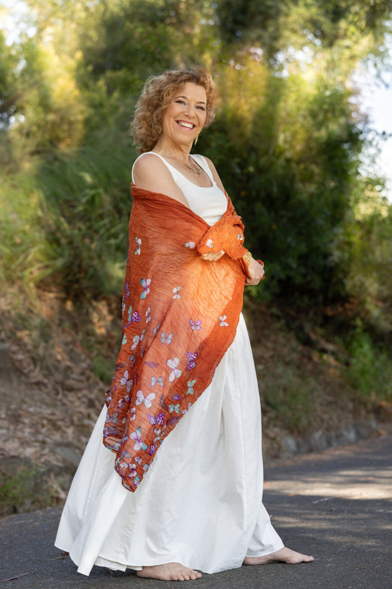

Author, coach, movement teacher, and workshop facilitator devoted to helping women come home to themselves.

Tsilah Burman is an author, coach, movement teacher, and workshop facilitator devoted to helping women come home to themselves. Her work weaves together embodied awareness, compassionate inquiry, movement, story, and spiritual listening. She believes the body is not something to overcome, fix, or control, but a living doorway into peace, truth, and freedom.
Through Welcome Home to Your Body, Tsilah creates spaces where women can breathe more deeply, feel more honestly, and reconnect with the light within them.
Tsilah's own path began with a lifelong struggle with food, weight, and body image that started in elementary school. She lost over 100 pounds and has maintained that weight loss since 2009. That journey of healing her relationship with her body and early childhood trauma is the ground her work stands on.
She brings that lived experience, along with embodiment and trauma-informed healing work, to every coaching session, movement class, and workshop she leads. She also coaches and leads movement classes for Heal Your Hunger, the program that helped her lose and maintain her weight, that supports women who are emotional eaters on their path to freedom.
Her upcoming memoir, Becoming Light, shares the fuller story of that transformation — and will be published soon.
Through guided reflection, embodied practice, gentle movement, writing, and ritual, Tsilah helps women release old ways of holding and open to a more compassionate, peaceful, and luminous relationship with themselves — exactly as they are.